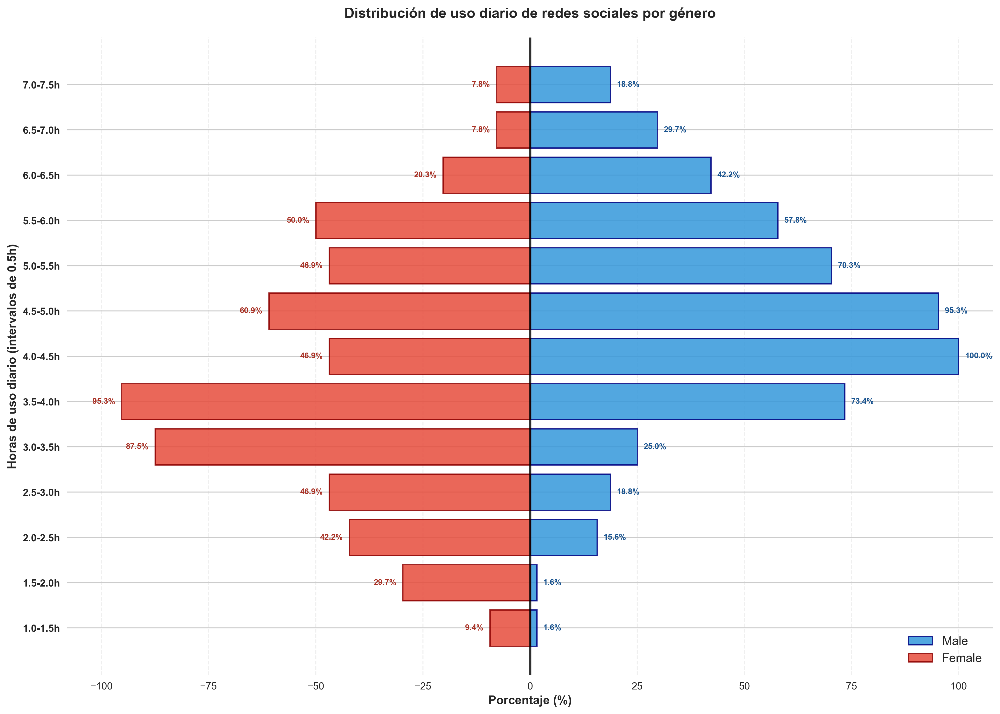
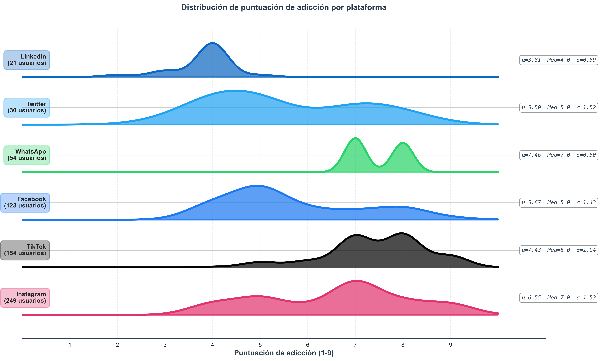

PEC 2
Distribución de uso diario de redes sociales por género
Compara el uso de redes sociales en intervalos de 0,5 horas entre hombres y mujeres estudiantes. La simetría muestra patrones de comportamiento digital por género.
 Ver imagen completaPerfiles multidimensionales por nivel académico
Compara 5 dimensiones (uso de redes sociales, sueño, salud mental, conflictos, adicción a las redes sociales) entre estudiantes de educación secundaria, grado y posgrado.
Ver interactivoDistribución de puntuación de adicción por plataforma
Visualiza cómo la puntuación de adicción se distribuye de manera diferente según la red social más usada (Instagram, TikTok, Facebook, etc.)
 Ver imagen completa